Benchmarks
| Condition | Value |
|---|---|
| Operating System | Windows 7 x64 |
| Compiler | MSVC 2019 x64 |
| Libraries Under Test (LUT) | Boost.GIL, CImg, DevIL, FreeImage, OpenImageIO, SAIL, SDL_Image, stb_image, WIC |
| LUT Installation Mode | vcpkg |
| SAIL Installation Mode | vcpkg |
| Benchmarks | sail-benchmark |
| Measured Time | Real (wall clock) |
| Measurement Units | Microseconds |
| Output Pixels | Default |
| Hardware | Lenovo Thinkpad W540 |
| CPU | Intel Core i7-4800MQ |
| Power Cable | Connected |
| Power Plan | Maximum Performance |
JPEG Gray
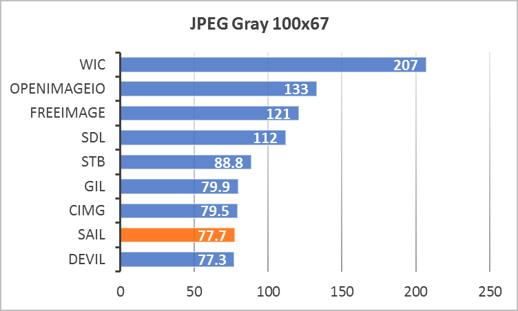
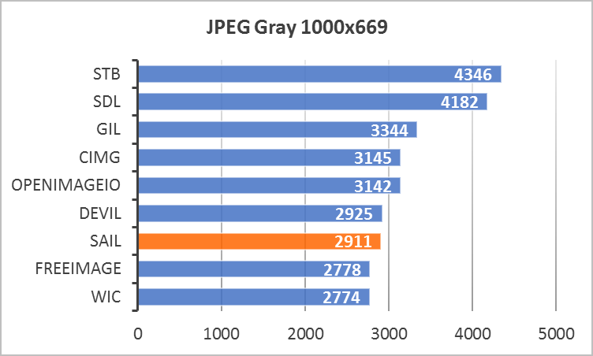
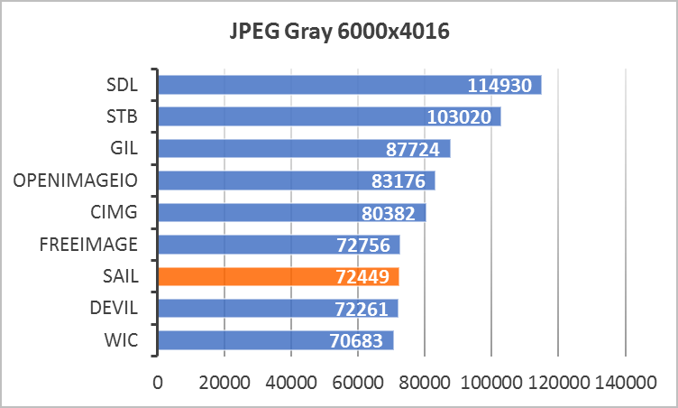
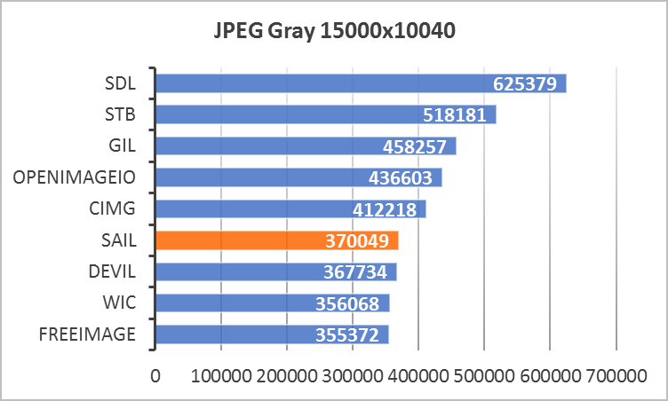
JPEG YCbCr
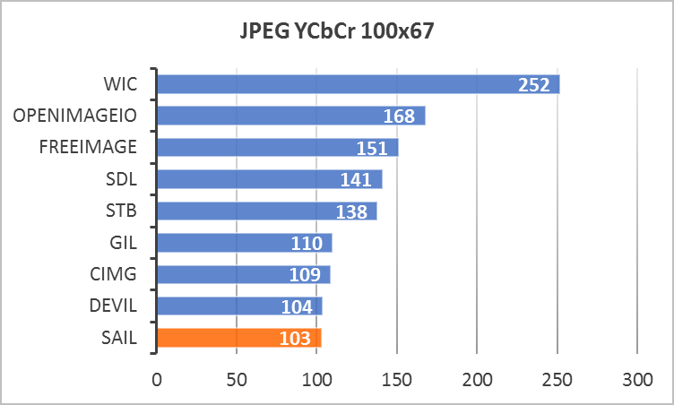
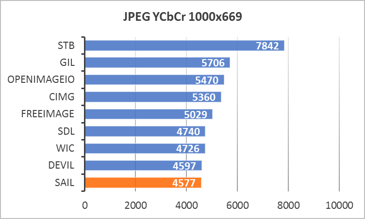

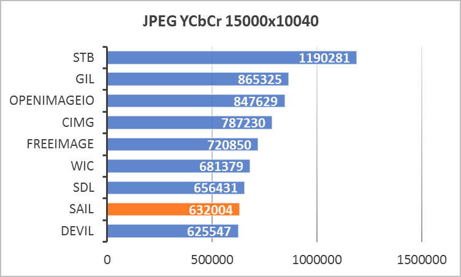
PNG Gray
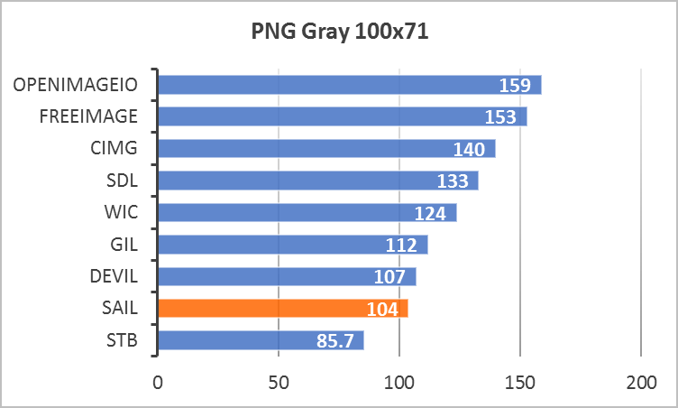
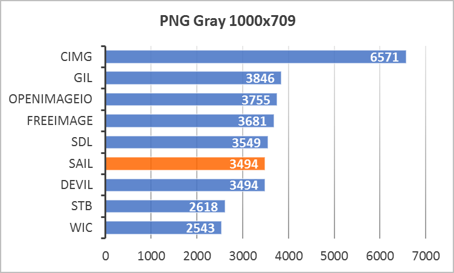
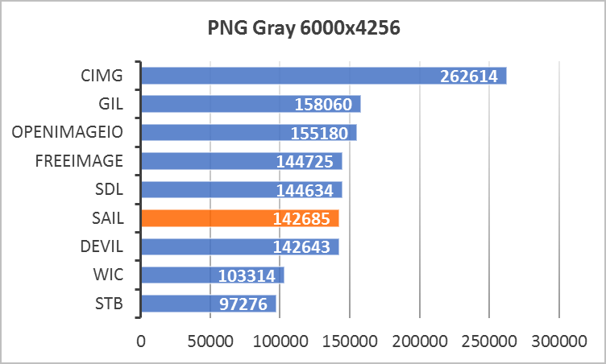
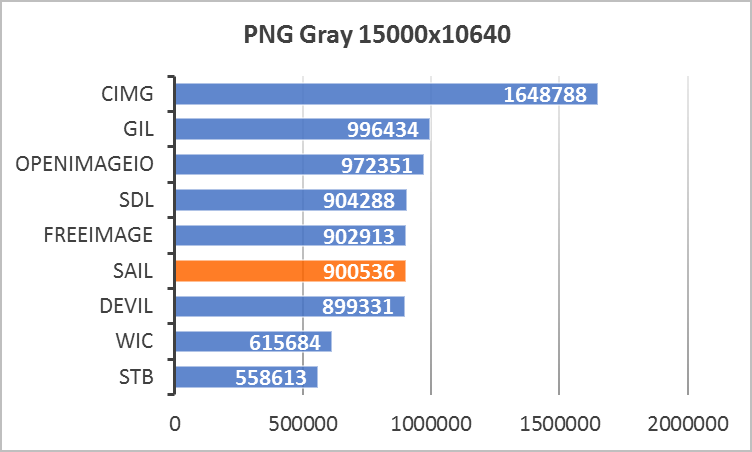
PNG RGBA
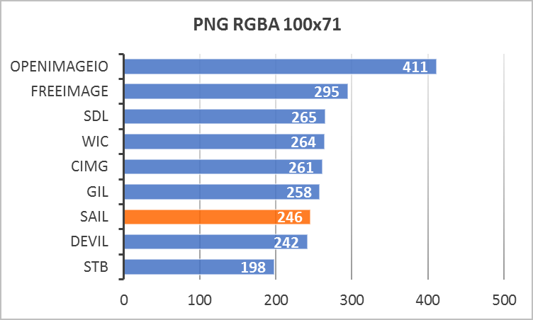
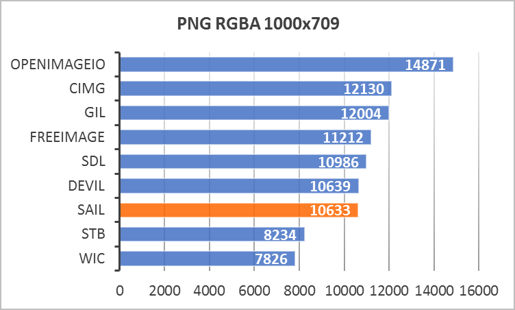
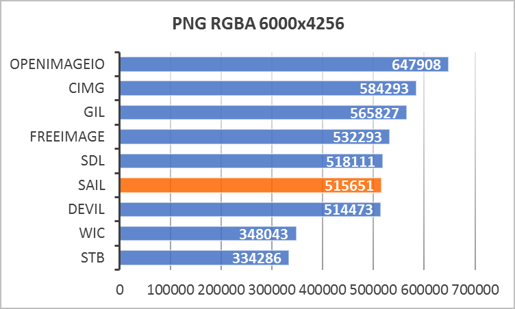
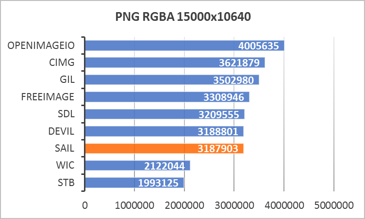